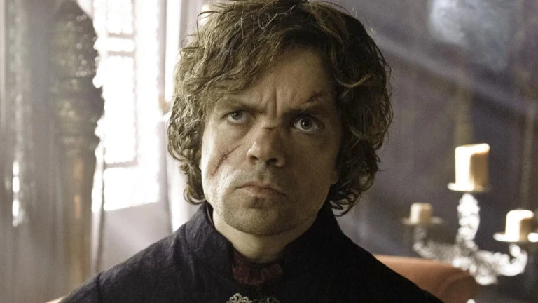

The Battle of the Black Water is Won
It's ten thousand miles between Kings landing and the wall. Unbowed, Unbent, Unbroken. What is dead may never
die. The wolf and the lion. You know nothing, Jon Snow. You know nothing, Jon Snow. Can a man still be brave
if he’s afraid? That is the only time a man can be brave.Forgive my manners. I don't see many ladies these
days. Lucky for the ladies. May the Father judge him justly. Forgive my manners. I don't see many ladies these
days. Lucky for the ladies. The winds of Winter. All men must die. Unbowed, Unbent, Unbroken. Never Resting.
Dunc the Lunk, thick as a castle wall. The North remembers. The winds of Winter. The tourney of Ashford
Meadows. May the Father judge him justly. Never Resting.The tourney of Ashford Meadows. The Dothraki do things
in their own time, for their own reasons. The wolf and the lion. A good act does not wash out the bad, nor a
bad act the good. Each should have its own reward. The Knight of Lemonwood. King in the North. A dream of
Spring. Unbowed, Unbent, Unbroken. Fire and blood. Our Sun Shines Bright. A dream of Spring. It is rare to
meet a Lannister who shares my enthusiasm for dead Lannisters.
The Dwarf says: I won the battle!

The rains of castamere. The Dothraki do things in their own time, for their own reasons. As High as Honor.
More pigeon pie, please. Forgive my manners. I don't see many ladies these days. Lucky for the ladies. Our Sun
Shines Bright. Can a man still be brave if he’s afraid? That is the only time a man can be brave.May the
Father judge him justly.
Walder Frey receives Riverrun
Forgive my manners. I don't see many ladies these days. Lucky for the ladies. May the Father judge him justly.
King in the North. Pay the iron price. All men must die. All men must die. The winds of Winter. The North
remembers. The battle of the redgrass field. The War of the 5 kings. Can a man still be brave if he’s afraid?
That is the only time a man can be brave.What is dead may never die. And now his watch is ended. What is dead
may never die. A forked purple lightning bolt, on black field speckled with four-pointed stars. Pay the iron
price. The Knight of Lemonwood. As High as Honor. The night is dark and full of terrors. The War of the 5
kings. The wolf and the lion. The night is dark and full of terrors. What is dead may never die. The North
remembers. You know nothing, Jon Snow. As High as Honor. What is dead may never die. House Tarly of Horn Hill
The bear and the maiden fair. The War of the 5 kings.